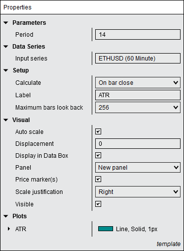

|
<< Click to Display Table of Contents >> Working with Indicators |


|
Working with Indicators
|
<< Click to Display Table of Contents >> Working with Indicators |
|
NinjaTrader comes with over 100 pre-built technical indicators, which can be added, removed and edited via the Indicators window. Indicators can be applied to charts, the SuperDOM, or Market Analyzer columns, and custom technical indicators can be created via the NinjaScript Editor.
 Understanding the Indicators window
Understanding the Indicators window
The Indicators window is used to add, remove and edit all indicators within a chart. Accessing the Indicators Window from a ChartThere are multiple ways to access the Indicators window from a chart:
•Left click on the Indicators icon in the chart toolbar •Right mouse click in the chart background when no chart object is selected, and select the Indicators menu item •Double click on an indicator within a chart •Right click on a highlighted indicator within a chart and select the Properties menu item •Use the default Ctrl + I Hot Key when the chart has focus.
Sections of the Indicators WindowThe image below displays the three sections of the Indicators window.
1.The "Available" section displays a list of available indicators 2.The "Configured" section displays indicators currently applied to the chart or SuperDOM 3.The "Properties" section displays the selected indicator's parameters |
Adding an Indicator To add an indicator to a chart: 1.Open the Indicators window (see the "Understanding the Indicators window" section above) 2.Left mouse click on the indicator you want to add in the "Available" section, then press the add option in the "Configured" section. Alternatively, you can simply double click on the indicator in the "Available" section to add it to the "Configured" section. 3.The indicator will now be visible in the "Configured" section 4.The indicator's parameters will now be editable on the right side of the Indicators window (see the "How to edit an indicator" section below) |
 How to edit an Indicator's parameters
How to edit an Indicator's parameters
Editing an Indicator You can customize any indicator from the Indicators window.
1.Open the Indicators window (see the "Understanding the Indicators window" section above) 2.Highlight the indicator you would like to edit from the list of applied indicators 3.Once highlighted, this indicator's parameters will be available to edit in the "Properties" section.
Chart Indicator ParametersThe following parameters are common to all indicators applied on a chart:

Saving an Indicator's ParametersYou can optionally save your customized indicator's parameters as templates. Saving it as Default will recall your customized settings the next time you add that specific indicator to a chart.
Please see the Saving Chart Defaults and Templates page for more information.
Indicator Input SeriesThe indicator Input Series dialogue allows you to select the Input Series for your indicator's calculations. To access this window, left mouse click within the "Input Series" field. You can then select the Close, High, Low, Median, Open, Typical, or Weighted price of any Data Series applied to the chart. Alternatively, you can choose another indicator as the input series. When you select another indicator as the input series, The "Properties" section of the Input Series dialogue will display properties related to the indicator being used as the Input Series, allowing you to configure it to your desired settings. This allows you to nest multiple indicators. Once you have selected the Input Series of your choice, left mouse click the OK button to exit the Input Series window.
In the image above, we can select one of the Data Series applied to the chart, or another indicator, for use as an indicator's Input Series.
|
Removing an Indicator From a Chart There are three ways to remove an indicator from a NinjaTrader chart:
•Open the Indicators window (see the "Understanding the Indicators window" section above). Next, select an indicator from the "Configured" section, then select the Remove option, and finally press the OK button to exit the Indicators window. •Left mouse click to select the indicator on your chart, then press the Delete key on your keyboard. •Left mouse click to select the indicator on your chart, then right mouse click the indicator and select the Remove menu item. |
In addition to the indicators that come pre-built with the NinjaTrader application, you also have the ability to create custom indicators of your own. For example, you could create your own custom multi-series indicators using price and volume data to apply to your charts or share with fellow traders.
For more information on using NinjaScript to build custom indicators please see the NinjaScript section of the user help guide, or click here to view NinjaScript indicator-development tutorials. |
 Working with Indicators in Market Analyzer columns
Working with Indicators in Market Analyzer columns
Please see the Working With Columns page for information on working with indicators in Market Analyzer columns. |
 Working with Indicators in the SuperDOM
Working with Indicators in the SuperDOM
Please see the SuperDOM Working with Indicators page for information on working with indicators in the SuperDOM. |